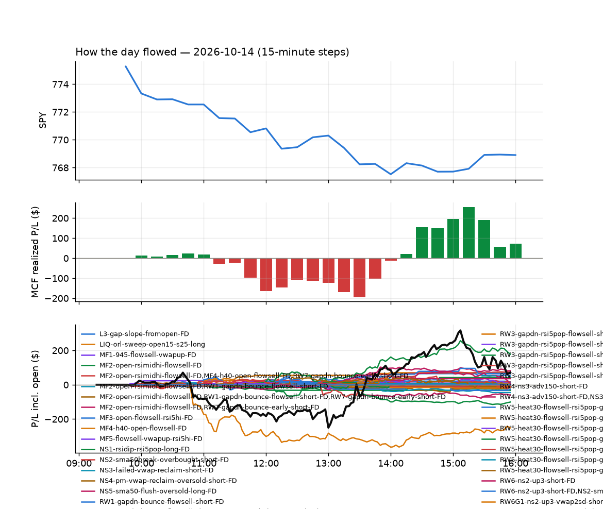

317 trades · win rate 51% · P/L $71.27
PROBATION: no live setup has passed both locked test periods. 10 owner-directed setups added 2026-10-08 (MarcoFlow top 5 + 5 new), untested live. RW6G1 (RW6 + VWAP band guard) added 2026-10-09, probation.

| Symbol | Setup | Side | In | Out | Entry | Exit | Exit reason | % gained | P/L |
|---|---|---|---|---|---|---|---|---|---|
| TWST | RW6-ns2-up3-short-FD | short | 10:07 | 13:37 | 153.02 | 148.48 | target | +2.97% | $27.24 |
| TWST | NS2-sma50break-overbought-short-FD | short | 10:07 | 13:37 | 153.02 | 148.48 | target | +2.97% | $27.24 |
| VFC | Opening-Range Low Sweep Reversal (LIQ-orl-sweep-open15-s25-long) | long | 10:46 | 15:56 | 16.03 | 16.49 | flatten | +2.87% | $26.68 |
| Symbol | Setup | Side | In | Out | Entry | Exit | Exit reason | % lost | P/L |
|---|---|---|---|---|---|---|---|---|---|
| GRML | ST2-slope20up-long-am-t05s1-FD | long | 12:06 | 13:29 | 7.18 | 6.69 | stop | -6.82% | $-64.68 |
| GRML | NS5-sma50-flush-oversold-long-FD | long | 12:56 | 15:30 | 6.82 | 6.36 | stop | -6.74% | $-63.48 |
| INTW | NS1-rsidip-rsi5pop-long-FD | long | 11:01 | 12:02 | 21.68 | 20.93 | stop | -3.45% | $-32.18 |
| FIGR | LIQ-orl-sweep-open15-s25-long | long | 10:31 | 13:10 | 25.66 | 24.85 | stop | -3.16% | $-29.16 |
| NUGT | LIQ-orl-sweep-open15-s25-long | long | 10:46 | 11:41 | 134.78 | 131.32 | stop | -2.57% | $-20.76 |
| FSLY | LIQ-orl-sweep-open15-s25-long | long | 10:45 | 11:51 | 26.26 | 25.61 | stop | -2.48% | $-22.82 |
| MRNA | heat_fade_short-FD | short | 11:11 | 11:56 | 216.18 | 220.97 | stop | -2.22% | $-19.16 |
| SKYD | RW5-heat30-flowsell-rsi5pop-gapdn-short-FD | short | 12:16 | 15:23 | 6.83 | 6.98 | stop | -2.20% | $-20.70 |
| LUNR | LIQ-orl-sweep-open15-s25-long | long | 10:46 | 12:11 | 11.55 | 11.30 | stop | -2.16% | $-20.25 |
| HUT | heat_fade_short-FD | short | 14:56 | 15:40 | 74.30 | 75.88 | stop | -2.13% | $-18.96 |
Signal to fill: median 1s, 90th percentile 2s (317 trades). Bars close each minute; the order follows the bar close.
Best excursion (MFE): median 0.65R; worst (MAE) median 0.64R. 31% of trades never got +0.25R in our favour; 1 reached +1R and still closed at or below 0.
| Symbol | Setup | Best R | Worst R | Closed R |
|---|---|---|---|---|
| DOCN | ST4-emadn-long-am-t1s05-FD | +1.32 | -1.05 | -1.11 |
| SKYD | RW5-heat30-flowsell-rsi5pop-gapdn-short-FD | +0.95 | -1.02 | -1.02 |
| TOST | MF3-open-flowsell-rsi5hi-FD | +0.76 | -1.10 | -1.06 |
| TOST | RW5-heat30-flowsell-rsi5pop-gapdn-short-FD | +0.76 | -1.10 | -1.05 |
| VTRS | MF1-945-flowsell-vwapup-FD | +0.83 | -0.98 | -0.98 |
| Entry time | Trades | Win | Avg R | P/L |
|---|---|---|---|---|
| 09:50-10:30 | 18 | 61% | +0.24 | $72.58 |
| 10:30-11:30 | 87 | 44% | -0.18 | $-167.73 |
| 11:30-13:00 | 97 | 54% | +0.07 | $98.96 |
| 13:00-14:00 | 68 | 63% | +0.18 | $131.01 |
| 14:00-16:00 | 47 | 40% | +0.01 | $-63.55 |
| Setup | Trades | Win | Avg R | Adj R (net of SPY) | P/L |
|---|---|---|---|---|---|
| L3-gap-slope-fromopen-FD | 5.0 | 60% | +0.14 | +0.09 | $8.83 |
| Opening-Range Low Sweep Reversal (LIQ-orl-sweep-open15-s25-long) | 47.0 | 30% | -0.42 | -0.02 | $-250.67 |
| MF1-945-flowsell-vwapup-FD | 3.0 | 33% | -0.08 | -0.59 | $16.45 |
| MF2-open-rsimidhi-flowsell-FD | 7.0 | 71% | +0.61 | +0.48 | $42.75 |
| MF3-open-flowsell-rsi5hi-FD | 10.0 | 60% | +0.31 | +0.17 | $51.95 |
| MF4-h40-open-flowsell-FD | 9.0 | 100% | +0.54 | +0.43 | $70.06 |
| MF5-flowsell-vwapup-rsi5hi-FD | 1.0 | 0% | -0.44 | -0.66 | $-2.64 |
| NS1-rsidip-rsi5pop-long-FD | 1.0 | 0% | -1.03 | -0.98 | $-32.18 |
| NS2-sma50break-overbought-short-FD | 8.0 | 88% | +0.56 | +0.48 | $72.17 |
| NS3-failed-vwap-reclaim-short-FD | 5.0 | 20% | -0.05 | +0.04 | $-4.12 |
| NS4-pm-vwap-reclaim-oversold-short-FD | 1.0 | 100% | +1.46 | +1.32 | $15.20 |
| NS5-sma50-flush-oversold-long-FD | 2.0 | 50% | -0.41 | -0.41 | $-60.18 |
| RW1-gapdn-bounce-flowsell-short-FD | 10.0 | 50% | +0.25 | +0.06 | $10.90 |
| RW2-exhaustion-noon-adv150-short-FD | 9.0 | 44% | -0.32 | -0.49 | $-16.22 |
| RW3-gapdn-rsi5pop-flowsell-short-FD | 15.0 | 73% | +0.36 | +0.19 | $81.91 |
| RW4-ns3-adv150-short-FD | 6.0 | 17% | -0.09 | +0.02 | $-6.06 |
| RW5-heat30-flowsell-rsi5pop-gapdn-short-FD | 13.0 | 77% | +0.59 | +0.27 | $64.81 |
| RW6-ns2-up3-short-FD | 2.0 | 100% | +0.95 | +0.74 | $35.57 |
| RW6G1-ns2-up3-vwap2sd-short-FD | 1.0 | 100% | +0.76 | +0.56 | $8.18 |
| RW7-gapdn-bounce-early-short-FD | 62.0 | 60% | +0.18 | +0.03 | $177.82 |
| ST2-slope20up-long-am-t05s1-FD | 17.0 | 41% | -0.33 | -0.34 | $-100.87 |
| ST4-emadn-long-am-t1s05-FD | 4.0 | 0% | -1.05 | -1.00 | $-45.24 |
| Afternoon Blow-off Short (exhaustion_short) failed Apr-Jun holdout: -0.020R/trade over 622 trades | 7.0 | 57% | +0.74 | +0.87 | $-10.37 |
| exhaustion_short-FD | 6.0 | 50% | -0.23 | -0.29 | $-26.44 |
| Midday Gap-Up Dip Buy (heat_fade_long) failed Apr-Jun holdout: -0.138R/trade over 1043 trades | 5.0 | 20% | -0.79 | -0.56 | $-17.33 |
| heat_fade_long-FD | 9.0 | 33% | -0.48 | -0.28 | $-11.93 |
| Morning Bounce Fade (heat_fade_short) failed Apr-Jun holdout: -0.015R/trade over 1420 trades | 3.0 | 67% | +0.30 | -0.49 | $2.48 |
| heat_fade_short-FD | 46.0 | 48% | -0.02 | -0.26 | $7.95 |
| Index Last-Half-Hour Momentum (intraday_momentum) failed Apr-Jun holdout: -0.091R/trade over 147 trades | 2.0 | 100% | +0.13 | -0.05 | $0.56 |
| 20-Minute Opening Range Breakout (orb20_a) failed Apr-Jun holdout: -0.040R/trade over 421 trades | 1.0 | 0% | -0.16 | -0.26 | $-12.06 |
Market direction (SPY, beta 1) accounted for $63.05 of today's $71.27; the rest ($8.22) came from the setups themselves. Avg R net of SPY: -0.03 (incl. a hedge leg's cost; report only).
39 setups live today. Today: 474 signals, 326 taken, 44 lost because another setup held the symbol (9%). Since 2026-10-09 (4 sessions): 1550 signals, 947 taken, 281 lost to other setups (18%). Peak open positions today 146 of 400 slots. Earnings blackout removed 150 symbols before scanning.
Simulated playing time (not live): 601 what-if trades of signals not taken, avg -0.04R, 50% winners; of them 281 lost to another setup (avg -0.04R).
Silent: ST3-rsi5up-short-pm-t1s1-FD · Crowded out: ST4-emadn-long-am-t1s05-FD, MF5-flowsell-vwapup-rsi5hi-FD, MF4-h40-open-flowsell-FD, RW1-gapdn-bounce-flowsell-short-FD, RW4-ns3-adv150-short-FD, NS3-failed-vwap-reclaim-short-FD, MF1-945-flowsell-vwapup-FD, MF3-open-flowsell-rsi5hi-FD, ST2-slope20up-long-am-t05s1-FD, exhaustion_short-FD, RW4-ns3-adv150-short · Starved: NS4-pm-vwap-reclaim-oversold-short-FD, heat_fade_long, heat_fade_long-FD, heat_fade_short, orb20_a
| Prio | Setup | Today sig / taken | Sessions | Signals / taken / trades | Taken/day | Expected/day | Lost to other setups | Lost to (setup n) | Top skip reasons | SIMULATED: not-taken n / avg R / win | Verdict |
|---|---|---|---|---|---|---|---|---|---|---|---|
| 1 | Prior-Day Low Sweep Reversal to VWAP LIQ-pdl-sweep-open15-vwap-long | 0 / 0 | 2 | 0 / 0 / 0 | 0.00 | 0.38 | 0 | – | – | 0 / – | quiet - wait no signals yet; only ~0.8 expected so far |
| 2 | ST5-pdbrkup-short-mid-t05s1-FD ST5-pdbrkup-short-mid-t05s1-FD | 0 / 0 | 3 | 1 / 1 / 1 | 0.33 | 0.78 | 0 | – | – | 0 / – | slow 1.7 entries/week; ~36 weeks to 60 trades |
| 3 | ST8-volspikedn-long-pm-t1s1-FD ST8-volspikedn-long-pm-t1s1-FD | 0 / 0 | 3 | 3 / 2 / 2 | 0.67 | 1.05 | 1 | orb20_a 1 | symbol held by another setup 1 | 1 / +0.91R / 100% | slow 3.3 entries/week; ~18 weeks to 60 trades |
| 4 | ST6-volspikeup-short-mid-t1s1-FD ST6-volspikeup-short-mid-t1s1-FD | 0 / 0 | 3 | 2 / 2 / 2 | 0.67 | 1.24 | 0 | – | – | 0 / – | slow 3.3 entries/week; ~18 weeks to 60 trades |
| 5 | ST3-rsi5up-short-pm-t1s1-FD ST3-rsi5up-short-pm-t1s1-FD | 0 / 0 | 3 | 0 / 0 / 0 | 0.00 | 1.35 | 0 | – | – | 0 / – | silent no signals in 3 session(s), ~4.1 expected |
| 6 | ST7-rsi50dn-long-pm-t1s1-FD ST7-rsi50dn-long-pm-t1s1-FD | 0 / 0 | 3 | 7 / 6 / 6 | 2.00 | 2.17 | 1 | orb20_a 1 | symbol held by another setup 1 | 1 / +0.91R / 100% | slow 10.0 entries/week; ~6 weeks to 60 trades |
| 7 | ST4-emadn-long-am-t1s05-FD ST4-emadn-long-am-t1s05-FD | 7 / 4 | 3 | 14 / 7 / 7 | 2.33 | 2.77 | 5 | RW7-gapdn-bounce-early-short-FD 2, RW5-heat30-flowsell-rsi5pop-gapdn-short-FD 2, orb20_a 1 | symbol held by another setup 5, spread / quote / size 2 | 7 / -0.51R / 29% | crowded-out 5 of 14 signals (36%) lost to setups already holding the symbol |
| 8 | ST1-ordn-long-pm-t05s1-FD ST1-ordn-long-pm-t05s1-FD | 0 / 0 | 3 | 3 / 3 / 3 | 1.00 | 3.49 | 0 | – | – | 0 / – | slow 5.0 entries/week; ~12 weeks to 60 trades |
| 9 | NS4-pm-vwap-reclaim-oversold-short-FD NS4-pm-vwap-reclaim-oversold-short-FD | 1 / 1 | 3 | 7 / 1 / 1 | 0.33 | 3.57 | 0 | – | not shortable / shorts off 6 | 6 / -1.16R / 0% | starved 0.33 entries/day vs ~3.57 expected |
| 10 | RW6G1-ns2-up3-vwap2sd-short-FD RW6G1-ns2-up3-vwap2sd-short-FD | 3 / 1 | 3 | 10 / 6 / 6 | 2.00 | 3.73 | 1 | RW6G1-ns2-up3-vwap2sd-short-FD 1, RW6-ns2-up3-short-FD 1, NS2-sma50break-overbought-short-FD 1 | spread / quote / size 2, symbol held by another setup 1, not shortable / shorts off 1 | 4 / -0.07R / 25% | slow 10.0 entries/week; ~6 weeks to 60 trades |
| 11 | L3-gap-slope-rsi5hi-FD L3-gap-slope-rsi5hi-FD | 4 / 0 | 3 | 33 / 16 / 16 | 5.33 | 13.41 | 2 | L3-gap-slope-fromopen-FD 1, RW6G1-ns2-up3-vwap2sd-short-FD 1, RW6-ns2-up3-short-FD 1 | not shortable / shorts off 15, symbol held by another setup 2 | 17 / -0.03R / 59% | ok 26.7 entries/week |
| 12 | L3-gap-slope-lowdist-FD L3-gap-slope-lowdist-FD | 1 / 0 | 3 | 28 / 14 / 14 | 4.67 | 9.76 | 4 | RW6-ns2-up3-short-FD 2, NS2-sma50break-overbought-short-FD 2, exhaustion_short 2 | not shortable / shorts off 6, symbol held by another setup 4, spread / quote / size 4 | 13 / -0.15R / 46% | ok 23.3 entries/week |
| 13 | L3-gap-slope-fromopen-FD L3-gap-slope-fromopen-FD | 16 / 6 | 3 | 62 / 21 / 20 | 7.00 | 11.44 | 6 | RW6-ns2-up3-short-FD 3, NS2-sma50break-overbought-short-FD 3, RW2-exhaustion-noon-adv150-short-FD 2 | not shortable / shorts off 26, spread / quote / size 9, symbol held by another setup 6 | 40 / -0.15R / 45% | ok 35.0 entries/week |
| 14 | NS1-rsidip-rsi5pop-long-FD NS1-rsidip-rsi5pop-long-FD | 1 / 1 | 3 | 9 / 9 / 9 | 3.00 | 5.39 | 0 | – | – | 0 / – | ok 15.0 entries/week |
| 15 | NS5-sma50-flush-oversold-long-FD NS5-sma50-flush-oversold-long-FD | 2 / 2 | 3 | 7 / 6 / 6 | 2.00 | 6.32 | 1 | heat_fade_short-FD 1 | symbol held by another setup 1 | 1 / +0.12R / 100% | slow 10.0 entries/week; ~6 weeks to 60 trades |
| 16 | RW6-ns2-up3-short-FD RW6-ns2-up3-short-FD | 5 / 2 | 3 | 20 / 11 / 11 | 3.67 | 7.12 | 3 | L3-gap-slope-fromopen-FD 2, L3-gap-slope-lowdist-FD 2, RW2-exhaustion-noon-adv150-short-FD 1 | spread / quote / size 4, symbol held by another setup 3, not shortable / shorts off 2 | 9 / -0.05R / 33% | ok 18.3 entries/week |
| 17 | MF2-open-rsimidhi-flowsell-FD MF2-open-rsimidhi-flowsell-FD | 12 / 7 | 3 | 28 / 14 / 14 | 4.67 | 10.09 | 3 | RW3-gapdn-rsi5pop-flowsell-short-FD 2, RW7-gapdn-bounce-early-short-FD 1, MF2-open-rsimidhi-flowsell-FD 1 | spread / quote / size 6, not shortable / shorts off 5, symbol held by another setup 3 | 14 / +0.60R / 64% | ok 23.3 entries/week |
| 18 | RW5-heat30-flowsell-rsi5pop-gapdn-short-FD RW5-heat30-flowsell-rsi5pop-gapdn-short-FD | 16 / 13 | 3 | 39 / 27 / 26 | 9.00 | 12.79 | 7 | RW3-gapdn-rsi5pop-flowsell-short-FD 3, RW7-gapdn-bounce-early-short-FD 3, NS2-sma50break-overbought-short-FD 1 | symbol held by another setup 7, not shortable / shorts off 5 | 12 / -0.20R / 42% | ok 45.0 entries/week |
| 19 | RW3-gapdn-rsi5pop-flowsell-short-FD RW3-gapdn-rsi5pop-flowsell-short-FD | 20 / 17 | 3 | 37 / 27 / 23 | 9.00 | 13.59 | 7 | RW5-heat30-flowsell-rsi5pop-gapdn-short-FD 4, RW1-gapdn-bounce-flowsell-short-FD 1, NS2-sma50break-overbought-short-FD 1 | symbol held by another setup 7, not shortable / shorts off 3 | 10 / +0.30R / 80% | ok 45.0 entries/week |
| 20 | MF5-flowsell-vwapup-rsi5hi-FD MF5-flowsell-vwapup-rsi5hi-FD | 1 / 1 | 3 | 26 / 15 / 14 | 5.00 | 15.47 | 10 | RW5-heat30-flowsell-rsi5pop-gapdn-short-FD 5, RW3-gapdn-rsi5pop-flowsell-short-FD 2, RW1-gapdn-bounce-flowsell-short-FD 2 | symbol held by another setup 10, not shortable / shorts off 1 | 11 / +0.29R / 73% | crowded-out 10 of 26 signals (38%) lost to setups already holding the symbol |
| 21 | MF4-h40-open-flowsell-FD MF4-h40-open-flowsell-FD | 15 / 9 | 3 | 41 / 14 / 14 | 4.67 | 16.45 | 16 | MF5-flowsell-vwapup-rsi5hi-FD 5, MF1-945-flowsell-vwapup-FD 3, RW5-heat30-flowsell-rsi5pop-gapdn-short-FD 3 | symbol held by another setup 16, not shortable / shorts off 8, spread / quote / size 3 | 27 / +0.10R / 70% | crowded-out 16 of 41 signals (39%) lost to setups already holding the symbol |
| 22 | RW1-gapdn-bounce-flowsell-short-FD RW1-gapdn-bounce-flowsell-short-FD | 17 / 11 | 3 | 40 / 26 / 24 | 8.67 | 17.10 | 10 | RW3-gapdn-rsi5pop-flowsell-short-FD 5, MF2-open-rsimidhi-flowsell-FD 3, RW5-heat30-flowsell-rsi5pop-gapdn-short-FD 3 | symbol held by another setup 10, not shortable / shorts off 3, spread / quote / size 1 | 14 / +0.27R / 71% | crowded-out 10 of 40 signals (25%) lost to setups already holding the symbol |
| 23 | RW4-ns3-adv150-short-FD RW4-ns3-adv150-short-FD | 17 / 6 | 3 | 36 / 16 / 16 | 5.33 | 17.34 | 9 | ST2-slope20up-long-am-t05s1-FD 4, LIQ-orl-sweep-open15-s25-long 2, heat_fade_long 2 | symbol held by another setup 9, not shortable / shorts off 9, spread / quote / size 2 | 20 / -0.36R / 35% | crowded-out 9 of 36 signals (25%) lost to setups already holding the symbol |
| 24 | NS2-sma50break-overbought-short-FD NS2-sma50break-overbought-short-FD | 9 / 8 | 3 | 45 / 33 / 32 | 11.00 | 17.08 | 3 | L3-gap-slope-fromopen-FD 3, L3-gap-slope-rsi5hi-FD 2, L3-gap-slope-lowdist-FD 2 | not shortable / shorts off 5, spread / quote / size 4, symbol held by another setup 3 | 12 / -0.13R / 33% | ok 55.0 entries/week |
| 25 | NS3-failed-vwap-reclaim-short-FD NS3-failed-vwap-reclaim-short-FD | 18 / 5 | 3 | 45 / 15 / 15 | 5.00 | 22.02 | 20 | RW4-ns3-adv150-short-FD 8, ST2-slope20up-long-am-t05s1-FD 7, LIQ-orl-sweep-open15-s25-long 2 | symbol held by another setup 20, not shortable / shorts off 9, spread / quote / size 1 | 30 / -0.29R / 37% | crowded-out 20 of 45 signals (44%) lost to setups already holding the symbol |
| 26 | MF1-945-flowsell-vwapup-FD MF1-945-flowsell-vwapup-FD | 6 / 3 | 3 | 45 / 13 / 13 | 4.33 | 23.94 | 24 | MF5-flowsell-vwapup-rsi5hi-FD 10, RW5-heat30-flowsell-rsi5pop-gapdn-short-FD 6, RW3-gapdn-rsi5pop-flowsell-short-FD 4 | symbol held by another setup 24, spread / quote / size 6, not shortable / shorts off 2 | 32 / -0.19R / 34% | crowded-out 24 of 45 signals (53%) lost to setups already holding the symbol |
| 27 | MF3-open-flowsell-rsi5hi-FD MF3-open-flowsell-rsi5hi-FD | 12 / 10 | 3 | 51 / 19 / 19 | 6.33 | 24.16 | 25 | MF5-flowsell-vwapup-rsi5hi-FD 11, RW5-heat30-flowsell-rsi5pop-gapdn-short-FD 7, RW3-gapdn-rsi5pop-flowsell-short-FD 4 | symbol held by another setup 25, spread / quote / size 4, not shortable / shorts off 3 | 32 / -0.01R / 53% | crowded-out 25 of 51 signals (49%) lost to setups already holding the symbol |
| 28 | ST2-slope20up-long-am-t05s1-FD ST2-slope20up-long-am-t05s1-FD | 25 / 18 | 3 | 70 / 47 / 46 | 15.67 | 24.03 | 20 | RW7-gapdn-bounce-early-short-FD 9, heat_fade_short-FD 5, RW5-heat30-flowsell-rsi5pop-gapdn-short-FD 4 | symbol held by another setup 20, spread / quote / size 2, price through stop/target 1 | 23 / -0.07R / 61% | crowded-out 20 of 70 signals (29%) lost to setups already holding the symbol |
| 29 | RW2-exhaustion-noon-adv150-short-FD RW2-exhaustion-noon-adv150-short-FD | 12 / 9 | 3 | 60 / 40 / 40 | 13.33 | 50.34 | 2 | L3-gap-slope-fromopen-FD 2, L3-gap-slope-rsi5hi-FD 2, RW6-ns2-up3-short-FD 1 | spread / quote / size 10, not shortable / shorts off 8, symbol held by another setup 2 | 20 / -0.03R / 45% | ok 66.7 entries/week |
| 30 | Midday Gap-Up Dip Buy heat_fade_long | 5 / 5 | 3 | 29 / 22 / 22 | 7.33 | 30.36 | 4 | heat_fade_long-FD 2, ST4-emadn-long-am-t1s05-FD 1, ST7-rsi50dn-long-pm-t1s1-FD 1 | symbol held by another setup 4, spread / quote / size 3 | 7 / -0.21R / 43% | starved 7.33 entries/day vs ~30.36 expected |
| 31 | heat_fade_long-FD heat_fade_long-FD | 15 / 9 | 3 | 67 / 38 / 36 | 12.67 | 51.74 | 8 | heat_fade_long 5, ST7-rsi50dn-long-pm-t1s1-FD 2, ST4-emadn-long-am-t1s05-FD 1 | spread / quote / size 21, symbol held by another setup 8 | 29 / +0.17R / 62% | starved 12.67 entries/day vs ~51.74 expected |
| 32 | RW7-gapdn-bounce-early-short-FD RW7-gapdn-bounce-early-short-FD | 79 / 63 | 3 | 183 / 131 / 126 | 43.67 | 59.92 | 31 | LIQ-orl-sweep-open15-s25-long 10, RW1-gapdn-bounce-flowsell-short-FD 9, MF2-open-rsimidhi-flowsell-FD 7 | symbol held by another setup 31, not shortable / shorts off 14, spread / quote / size 7 | 52 / +0.16R / 62% | ok 218.3 entries/week |
| 33 | Afternoon Blow-off Short exhaustion_short | 8 / 7 | 3 | 19 / 14 / 14 | 4.67 | 12.12 | 3 | RW2-exhaustion-noon-adv150-short-FD 1, L3-gap-slope-rsi5hi-FD 1, L3-gap-slope-lowdist-FD 1 | symbol held by another setup 3, spread / quote / size 2 | 5 / -0.03R / 40% | ok 23.3 entries/week |
| 34 | exhaustion_short-FD exhaustion_short-FD | 9 / 6 | 3 | 36 / 18 / 17 | 6.00 | 64.64 | 9 | RW2-exhaustion-noon-adv150-short-FD 6, L3-gap-slope-fromopen-FD 4, L3-gap-slope-lowdist-FD 3 | symbol held by another setup 9, not shortable / shorts off 6, spread / quote / size 3 | 18 / -0.33R / 22% | crowded-out 9 of 36 signals (25%) lost to setups already holding the symbol |
| 35 | Morning Bounce Fade heat_fade_short | 9 / 3 | 3 | 17 / 8 / 8 | 2.67 | 31.76 | 0 | – | spread / quote / size 6, not shortable / shorts off 3 | 9 / +0.49R / 78% | starved 2.67 entries/day vs ~31.76 expected |
| 36 | heat_fade_short-FD heat_fade_short-FD | 69 / 49 | 3 | 233 / 161 / 156 | 53.67 | 173.78 | 32 | LIQ-orl-sweep-open15-s25-long 8, RW7-gapdn-bounce-early-short-FD 6, heat_fade_short 4 | symbol held by another setup 32, spread / quote / size 30, not shortable / shorts off 10 | 72 / -0.02R / 53% | ok 268.3 entries/week |
| 37 | Opening-Range Low Sweep Reversal LIQ-orl-sweep-open15-s25-long | 53 / 47 | 2 | 98 / 91 / 91 | 45.50 | 31.30 | 2 | orb20_a 1, MF4-h40-open-flowsell-FD 1 | spread / quote / size 5, symbol held by another setup 2 | 7 / -0.94R / 0% | ok 227.5 entries/week |
| 38 | Index Last-Half-Hour Momentum intraday_momentum | 2 / 2 | 3 | 4 / 4 / 4 | 1.33 | 2.37 | 0 | – | – | 0 / – | slow 6.7 entries/week; ~9 weeks to 60 trades |
| 39 | 20-Minute Opening Range Breakout orb20_a | 5 / 1 | 3 | 9 / 3 / 3 | 1.00 | 6.79 | 0 | – | trigger missed between polls 4, not shortable / shorts off 2 | 6 / -0.39R / 33% | starved 1.00 entries/day vs ~6.79 expected |
Every trade is attached as a CSV you can open and edit in Excel or Google Sheets. Live page: https://misiti15.github.io/MCF/live/